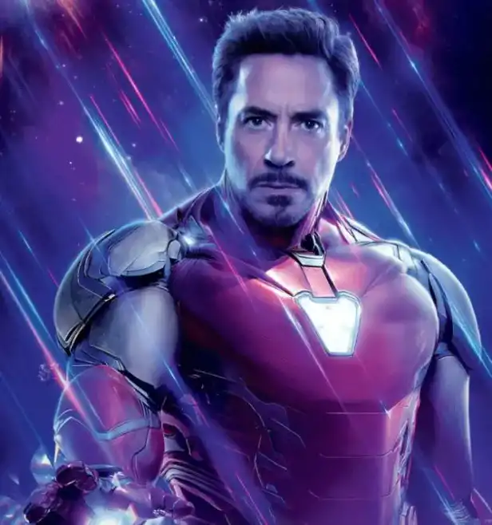
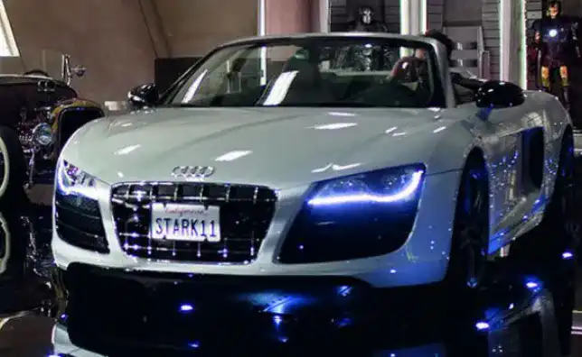

Iron man un Super héros du Comics
Tony Stark alias Iron man est un super héros qui joue dans l'univers Marvel de la maison d'édition Marvel comics. Tout a commencé en Afghanistan pendant la guerre ,Tony Stark s'est fait capturé par l'ennemi qui l'ont obligé à fabriquer une arme. Mais le Super héros en a profité pour fabriquer son propre armure et s'échapper de cette prison.
Cet armure lui donne des capacités hors norme, qui lui permet de combattre les malfaiteurs. Il peut se déplacer hyper vite grâce à l'armure, exploser des voitures, tuer des ennemis. L’armure est relié à une sorte d'assistance qui lui dicte les choses à faire et prévenir les attaques des ennemies. Sans son armure le super héros serait facile à atteindre sans cette armure.
Tony Stark fait de la pub
Tony Stark est souvent l’homme qui incarne la nouvelle génération dans ces films. On le voit souvent rouler avec des voitures de haute gamme, un jet privé et détient un labo High Tech . Ce statut lui permet de faire certain pub de voiture de luxe, comme dans la série des Iron man ou Audi plaçait sa nouvelle R8 Spyder. Il y’a aussi Honda dans les Avengers, on aperçoit Tony conduire un Acura après l'arrestation de Loki. Le super héros aime balader avec des voitures haut de gamme lors des tournages de ses films. Ces voitures peuvent parfois avoir des impactes négative dans l’environnement.
Les voitures haute gamme polluent plus!
En effet il est avéré que le R8 Spyder d'Audi qu'on aperçoit dans le film Iron man deux, fait partie des voitures les plus polluantes en France. Comme on peut le constater dans l'image ci-dessus, le super héros préférait rentrer chez lui avec son Audi plutôt qu'utiliser sa combinaison habituelle pour se rendre à son domicile après une soirée passée dans un musée.
Et d'après les études publiées par l’agence de l’environnement et de la maîtrise de l'énergie (Ademe) , la Spyder R8 est une voiture de luxe haute gamme qui s'avère être une des plus polluantes de la planète. Elle émet à elle seul l'équivalent de trois cents cinquante grammes de CO2 par kilomètre. Ce qui est énorme sachant qu'elle occupe la classe G.
L’armure est peut être une solution
On se demande s'il n'était pas préférable que le Super héros se déplaçait à l'aide de son armure pour éviter de polluer. Sachant que durant ces dernières années, le problème du réchauffement climatique fait susciter beaucoup de débat que nous allons en parler dans l’article suivant.